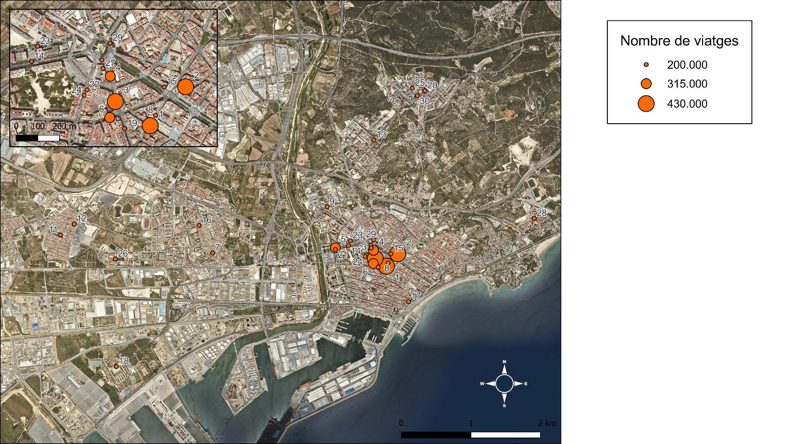

Informes i Cartografia
El mapa mostra la distribució de les parades de transport públic dins de la ciutat de Tarragona i la seva relació amb alguns dels principals equipaments urbans. Aquesta representació permet visualitzar com el transport públic connecta diferents barris i facilita l'accés a serveis essencials com hospitals, universitats o estacions.
Informe Cartogràfic 2023
Mapa detallat de la xarxa de transport públic realitzat mitjançant anàlisi territorial avançat. Aclaparadora presència de l'accessibilitat en els nodes principals de la ciutat.

Figura 1: Mapa d'accessibilitat i línies (clica per ampliar)